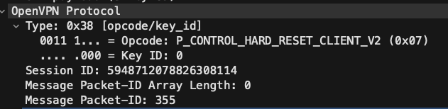
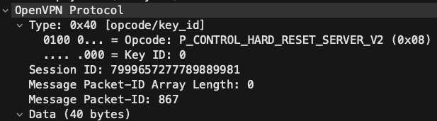

How Wireshark saved my sanity while setting up OpenVPN on Raspberry Pi
I was setting up PiVPN on my Raspberry PI because one of my side projects requires connection between my devices (laptop, phone) and my home network from anywhere.
The setup process was relatively straightforward and can be summarized into the following steps:
- Install PiVPN
curl -L https://install.pivpn.io | bash. This will open an installation guide in the terminal. - Follow the guided installation.
- Create new client OVPN profile.
- Configure port forwarding on router to Raspberry PI running OpenVPN
- Copy new profile to devices.
- Add profile to OpenVPN client and start using it.
I clicked on the connection toggle and waited.
5 seconds…10 seconds…still trying to connect…
I checked the client side logs and found some timeout errors.
I then checked the server side logs and found the following errors:
Feb 11 01:09:45 ovpn-server[802]: xxx.xx.xxx.xxx:46198 Control Channel: TLSv1.3, cipher TLSv1.3 TLS_AES_256_GCM_SHA384, peer certificate: 256 bit EC, curve prime256v1, signature: ecdsa-with-SHA256
Feb 11 01:09:45 ovpn-server[802]: xxx.xx.xxx.xxx:46198 [pixel] Peer Connection Initiated with [AF_INET]xxx.xx.xxx.xxx:46198
Feb 11 01:09:45 ovpn-server[802]: pixel/xxx.xx.xxx.xxx:46198 MULTI_sva: pool returned IPv4=10.224.27.2, IPv6=(Not enabled)
Feb 11 01:09:45 ovpn-server[802]: pixel/xxx.xx.xxx.xxx:46198 OPTIONS IMPORT: reading client specific options from: /etc/openvpn/ccd/pixel
Feb 11 01:09:45 ovpn-server[802]: pixel/xxx.xx.xxx.xxx:46198 MULTI: Learn: 10.224.27.2 -> pixel/xxx.xx.xxx.xxx:46198
Feb 11 01:09:45 ovpn-server[802]: pixel/xxx.xx.xxx.xxx:46198 MULTI: primary virtual IP for pixel/xxx.xx.xxx.xxx:46198: 10.224.27.2
Feb 11 01:09:45 ovpn-server[802]: pixel/xxx.xx.xxx.xxx:46198 Data Channel: using negotiated cipher 'AES-256-GCM'
Feb 11 01:09:45 ovpn-server[802]: pixel/xxx.xx.xxx.xxx:46198 Outgoing Data Channel: Cipher 'AES-256-GCM' initialized with 256 bit key
Feb 11 01:09:45 ovpn-server[802]: pixel/xxx.xx.xxx.xxx:46198 Incoming Data Channel: Cipher 'AES-256-GCM' initialized with 256 bit key
Feb 11 01:09:45 ovpn-server[802]: pixel/xxx.xx.xxx.xxx:46198 SENT CONTROL [pixel]: 'PUSH_REPLY,dhcp-option DNS 1.1.1.1,dhcp-option DNS 1.0.0.1,block-outside-dns,redirect-gateway def1,route-gateway 10.224.27.1,topology subnet,ping 15,ping-restart 120,i
fconfig 10.224.27.2 255.255.255.0,peer-id 0,cipher AES-256-GCM' (status=1)
Feb 11 01:09:45 ovpn-server[802]: pixel/xxx.xx.xxx.xxx:46198 PUSH: Received control message: 'PUSH_REQUEST'
Feb 11 01:31:22 ovpn-server[802]: pixel/xxx.xx.xxx.xxx:46198 SIGTERM[soft,remote-exit] received, client-instance exiting
Feb 11 03:37:45 ovpn-server[802]: tls-crypt unwrap error: packet too short
Feb 11 03:37:45 ovpn-server[802]: TLS Error: tls-crypt unwrapping failed from [AF_INET]xxx.xx.xxx.xx:37048
Feb 11 05:56:00 ovpn-server[802]: yyy.yy.yyy.yy:42109 Outgoing Control Channel Encryption: Cipher 'AES-256-CTR' initialized with 256 bit key
Feb 11 05:56:00 ovpn-server[802]: yyy.yy.yyy.yy:42109 Outgoing Control Channel Encryption: Using 256 bit message hash 'SHA256' for HMAC authentication
Feb 11 05:56:00 ovpn-server[802]: yyy.yy.yyy.yy:42109 Incoming Control Channel Encryption: Cipher 'AES-256-CTR' initialized with 256 bit key
Feb 11 05:56:00 ovpn-server[802]: yyy.yy.yyy.yy:42109 Incoming Control Channel Encryption: Using 256 bit message hash 'SHA256' for HMAC authentication
Feb 11 05:56:00 ovpn-server[802]: yyy.yy.yyy.yy:42109 TLS: Initial packet from [AF_INET]yyy.yy.yyy.yy:42109, sid=31c0a8dd 2be9af51
Feb 11 05:56:01 ovpn-server[802]: yyy.yy.yyy.yy:42109 tls-crypt unwrap error: bad packet ID (may be a replay): [ #1 / time = (1676094959) 2023-02-11 05:55:59 ] -- see the man page entry for --no-replay and --replay-window for more info or silence this
warning with --mute-replay-warnings
Feb 11 05:56:01 ovpn-server[802]: yyy.yy.yyy.yy:42109 tls-crypt unwrap error: packet replay
Feb 11 05:56:01 ovpn-server[802]: yyy.yy.yyy.yy:42109 TLS Error: tls-crypt unwrapping failed from [AF_INET]yyy.yy.yyy.yy:42109
Feb 11 05:56:02 ovpn-server[802]: yyy.yy.yyy.yy:42109 tls-crypt unwrap error: bad packet ID (may be a replay): [ #1 / time = (1676094959) 2023-02-11 05:55:59 ] -- see the man page entry for --no-replay and --replay-window for more info or silence this
warning with --mute-replay-warnings
Feb 11 05:56:02 ovpn-server[802]: yyy.yy.yyy.yy:42109 tls-crypt unwrap error: packet replay
Feb 11 05:56:02 ovpn-server[802]: yyy.yy.yyy.yy:42109 TLS Error: tls-crypt unwrapping failed from [AF_INET]yyy.yy.yyy.yy:42109
Feb 11 05:56:03 ovpn-server[802]: yyy.yy.yyy.yy:42109 tls-crypt unwrap error: bad packet ID (may be a replay): [ #1 / time = (1676094959) 2023-02-11 05:55:59 ] -- see the man page entry for --no-replay and --replay-window for more info or silence this
warning with --mute-replay-warnings
.
..
...
Feb 12 08:33:32 ovpn-server[65290]: zzz.zz.zzz.zz:41700 tls-crypt unwrap error: packet replay
Feb 12 08:33:32 ovpn-server[65290]: zzz.zz.zzz.zz:41700 TLS Error: tls-crypt unwrapping failed from [AF_INET]zzz.zz.zzz.zz:41700
Feb 12 08:33:32 ovpn-server[65290]: zzz.zz.zzz.zz:41700 PID_ERR replay-window backtrack occurred [1] [TLS_WRAP-0] [013] 1676190806:3 1676190806:2 t=1676190812[0] r=[-3,64,15,1,1] sl=[61,3,64,528]
Feb 12 08:33:32 ovpn-server[65290]: zzz.zz.zzz.zz:41700 PID_ERR replay [1] [TLS_WRAP-0] [013] 1676190806:3 1676190806:2 t=1676190812[0] r=[-3,64,15,1,1] sl=[61,3,64,528]
Feb 12 08:33:32 ovpn-server[65290]: zzz.zz.zzz.zz:41700 tls-crypt unwrap error: bad packet ID (may be a replay): [ #2 / time = (1676190806) 2023-02-12 08:33:26 ] -- see the man page entry for --no-replay and --replay-window for more info or silence th
is warning with --mute-replay-warnings
A few notable error logs are:
tls-crypt unwrap error: packet too short
TLS Error: tls-crypt unwrapping failed from [AF_INET]xxx.xx.xxx.xx:37048
tls-crypt unwrap error: packet replay
TLS Error: tls-crypt unwrapping failed from [AF_INET]yyy.yy.yyy.yy:42109
PID_ERR replay-window backtrack occurred [1] [TLS_WRAP-0] [013] 1676190806:3 1676190806:2 t=1676190812[0] r=[-3,64,15,1,1] sl=[61,3,64,528]
PID_ERR replay [1] [TLS_WRAP-0] [013] 1676190806:3 1676190806:2 t=1676190812[0] r=[-3,64,15,1,1] sl=[61,3,64,528]
tls-crypt unwrap error: bad packet ID (may be a replay): [ #1 / time = (1676094959) 2023-02-11 05:55:59 ] -- see the man page entry for --no-replay and --replay-window for more info or silence this
warning with --mute-replay-warnings
I would say I know how TLS work at a very high level but totally clueless about the low level details, which means the error logs are pretty much useless to me.
Fortunately, I am not alone with these errors; a little Googling showed that plenty of others have encountered similar errors before.
I tried most if not all the suggestions, such as using tcp instead of udp and removing persist-tun configuration. None of them worked. Increasing the server logging verbosity also did not provide any useful clue.
At the verge of giving up, I thought why not use Wireshark to analyze the packets that are transmitted when the VPN connection is failing. I might find something interesting.
I connected to my Raspberry PI via SSH and ran the following command:
sudo tcpdump -i eth0 -w ./traffic.pcap
I then used scp to copy file to my laptop.
scp ubuntu@192.168.1.249:/home/ubuntu/traffic.pcap ./
Next, I loaded the pcap file into Wireshark.
1 0.000000 0.000000 64 192.168.1.249 192.168.1.210 SSH 190 1 56697965 125 Server: Encrypted packet (len=124) 1 501 22 64948
2 0.001819 0.001819 64 192.168.1.210 192.168.1.249 TCP 66 1 1253244449 1 64948 → 22 [ACK] Seq=1 Ack=125 Win=2046 Len=0 TSval=3167776646 TSecr=1119811342 125 2046 64948 22
3 0.459540 0.457721 64 192.168.1.210 192.168.1.255 UDP 305 54915 → 54915 Len=263
4 0.937102 0.477562 foobar Spanning-tree-(for-bridges)_00 STP 60 Conf. Root = 32768/0/48:8d:36:54:e7:aa Cost = 0 Port = 0x8001
5 1.454469 0.517367 64 192.168.1.210 192.168.1.255 UDP 305 54915 → 54915 Len=263
6 1.663485 0.209016 1 192.168.1.189 239.255.255.250 UDP 746 47151 → 8082 Len=704
7 2.458501 0.795016 64 192.168.1.210 192.168.1.255 UDP 305 54915 → 54915 Len=263
8 2.590758 0.132257 64 192.168.1.254 192.168.1.255 UDP 139 39003 → 9995 Len=97
9 2.928424 0.337666 64 192.168.1.254 192.168.1.249 NBNS 92 Name query NBSTAT *<00><00><00><00><00><00><00><00><00><00><00><00><00><00><00>
10 2.928566 0.000142 64,64 192.168.1.249 192.168.1.254 ICMP 120 Destination unreachable (Port unreachable)
11 2.937134 0.008568 foobar Spanning-tree-(for-bridges)_00 STP 60 Conf. Root = 32768/0/48:8d:36:54:e7:aa Cost = 0 Port = 0x8001
12 3.458518 0.521384 64 192.168.1.210 192.168.1.255 UDP 305 54915 → 54915 Len=263
13 4.288316 0.829798 4 192.168.1.101 239.255.255.250 SSDP 401 NOTIFY * HTTP/1.1
14 4.457622 0.169306 64 192.168.1.210 192.168.1.255 UDP 305 54915 → 54915 Len=263
15 4.664099 0.206477 1 192.168.1.189 239.255.255.250 UDP 746 47151 → 8082 Len=704
16 4.688270 0.024171 4 192.168.1.101 239.255.255.250 SSDP 389 NOTIFY * HTTP/1.1
17 4.937165 0.248895 foobar Spanning-tree-(for-bridges)_00 STP 60 Conf. Root = 32768/0/48:8d:36:54:e7:aa Cost = 0 Port = 0x8001
18 5.018265 0.081100 4 192.168.1.101 239.255.255.250 SSDP 337 NOTIFY * HTTP/1.1
19 5.068265 0.050000 4 192.168.1.101 239.255.255.250 SSDP 403 NOTIFY * HTTP/1.1
20 5.128252 0.059987 4 192.168.1.101 239.255.255.250 SSDP 417 NOTIFY * HTTP/1.1
21 5.238448 0.110196 4 192.168.1.101 239.255.255.250 SSDP 346 NOTIFY * HTTP/1.1
22 5.386472 0.148024 47 mobile device 192.168.1.249 OpenVPN 96 9618400393841380013 355 MessageType: P_CONTROL_HARD_RESET_CLIENT_V2
23 5.388696 0.002224 64 192.168.1.9 mobile device OpenVPN 108 6031768586382347636 355 MessageType: P_CONTROL_HARD_RESET_SERVER_V2
Note that I have also edited the Resolved name for my phone’s IP address (resolve as mobile device) for an easier time analyzing and also for privacy reasons.
There’s lots of noise in the traffic capture, so let’s filter by my phone’s IP address using the query below.
ip.src == <phone IP> or ip.dst == <phone IP>
After filtering, I get the following.
No. Time Delta time TTL Src Dst Protocol Opcode
22 5.386472 0.148024 47 mobile phone 192.168.1.249 OpenVPN P_CONTROL_HARD_RESET_CLIENT_V2
23 5.388696 0.002224 64 192.168.1.9 mobile phone OpenVPN P_CONTROL_HARD_RESET_SERVER_V2
25 6.275772 0.815699 47 mobile phone 192.168.1.249 OpenVPN P_CONTROL_HARD_RESET_CLIENT_V2
30 7.276032 0.338791 48 mobile phone 192.168.1.249 OpenVPN P_CONTROL_HARD_RESET_CLIENT_V2
31 7.276882 0.000850 64 192.168.1.9 mobile phone OpenVPN P_CONTROL_HARD_RESET_SERVER_V2
34 8.324030 0.659354 48 mobile phone 192.168.1.249 OpenVPN P_CONTROL_HARD_RESET_CLIENT_V2
38 9.316113 0.025497 48 mobile phone 192.168.1.249 OpenVPN P_CONTROL_HARD_RESET_CLIENT_V2
40 10.315925 0.857104 48 mobile phone 192.168.1.249 OpenVPN P_CONTROL_HARD_RESET_CLIENT_V2
44 11.282950 0.345758 64 192.168.1.9 mobile phone OpenVPN P_CONTROL_HARD_RESET_SERVER_V2
45 11.315602 0.032652 48 mobile phone 192.168.1.249 OpenVPN P_CONTROL_HARD_RESET_CLIENT_V2
55 12.315472 0.157171 48 mobile phone 192.168.1.249 OpenVPN P_CONTROL_HARD_RESET_CLIENT_V2
58 13.316122 0.378880 48 mobile phone 192.168.1.249 OpenVPN P_CONTROL_HARD_RESET_CLIENT_V2
61 14.316067 0.650241 48 mobile phone 192.168.1.249 OpenVPN P_CONTROL_HARD_RESET_CLIENT_V2
67 15.316372 0.379108 47 mobile phone 192.168.1.249 OpenVPN P_CONTROL_HARD_RESET_CLIENT_V2
68 15.318441 0.002069 64 192.168.1.9 mobile phone OpenVPN P_CONTROL_HARD_RESET_SERVER_V2
74 16.275833 0.578491 47 mobile phone 192.168.1.249 OpenVPN P_CONTROL_HARD_RESET_CLIENT_V2
The two things that immediately stood out to me were the repeated packets with similar OpenVPN protocol operations (P_CONTROL_HARD_RESET_CLIENT_V2 and P_CONTROL_HARD_RESET_SERVER_V2) and the IP destination and source of the repeated packets.
 
Src: mobile device Dst: 192.168.1.249 Op: P_CONTROL_HARD_RESET_CLIENT_V2
Src: 192.168.1.9 Dst: mobile device Op: P_CONTROL_HARD_RESET_SERVER_V2
Why is the response from server coming from 192.168.1.9? And why does it look so familiar…?
I executed ip a on my Raspberry PI and found 192.168.1.9 appearing.
eth0: <BROADCAST,MULTICAST,UP,LOWER_UP> mtu 1500 qdisc mq state UP group default qlen 1000
link/ether xx:yy:zz:cc:dd:bb brd ff:ff:ff:ff:ff:ff
inet 192.168.1.9/24 metric 100 brd 192.168.1.255 scope global dynamic eth0
valid_lft 11160sec preferred_lft 11160sec
inet 192.168.1.249/24 brd 192.168.1.255 scope global secondary noprefixroute eth0
valid_lft forever preferred_lft forever
inet6 fe80::dea6:32ff:fe23:5775/64 scope link
valid_lft forever preferred_lft forever
That’s when I remembered configuring a static IP address using dhcpcd.conf so that I do not have to add different SSH configuration for all the different Raspberry PIs that are running.
Host 192.168.1.24*
User ubuntu
StrictHostKeyChecking no
IdentityFile ~/.ssh/id_rsa.pi
In this case, 192.168.1.9 is the primary IP address.
Above I mentioned Configure port forwarding on router to Raspberry PI running OpenVPN. Instead of port forwarding traffic to 192.168.1.9, I configured port forwarding to 192.168.1.249.
I updated the configuration and FINALLY got the OpenVPN connection working.
Alternatively, I can add the following configuration to server.conf to tell which IP address OpenVPN should listen on.
What about the P_CONTROL_HARD_RESET_CLIENT_V2 and P_CONTROL_HARD_RESET_SERVER_V2? What’s the purpose of these messages?
After some research, I found this article (https://zeek.org/2021/03/16/a-zeek-openvpn-protocol-analyzer/) that briefly discussed the OpenVPN protocol.
Taken from the article:
When an OpenVPN connection occurs, the client sends a control hard reset client opcode to the server. The server replies with a control hard reset server, and then both sides exchange TLS information via the P_CONTROL_V1 message type. After the TLS information has been exchanged, the VPN begins and the data is transmitted via OpenVPN data messages (either v1 or v2).
Also from https://openvpn.net/community-resources/openvpn-protocol/,
* P_CONTROL_HARD_RESET_CLIENT_V1 -- Key method 1, initial key from
* client, forget previous state.
*
* P_CONTROL_HARD_RESET_SERVER_V1 -- Key method 1, initial key
* from server, forget previous state.
* P_CONTROL_V1 -- Control channel packet (usually TLS ciphertext).
* P_ACK_V1 -- Acknowledgement for P_CONTROL packets received.
To verify this, I captured the traffic on Raspberry Pi’s eth0 again, this time with the working VPN connection.
No. Time Delta time TTL Src Dst Protocol Opcode
162 6.518679 0.194301 47 mobile phone 192.168.1.9 OpenVPN P_CONTROL_HARD_RESET_CLIENT_V2
163 6.520662 0.001983 64 192.168.1.9 mobile phone OpenVPN P_CONTROL_HARD_RESET_SERVER_V2
164 6.668546 0.147884 47 mobile phone 192.168.1.9 SSL P_CONTROL_V1
165 6.669680 0.001134 64 192.168.1.9 mobile phone OpenVPN P_ACK_V1
166 6.669946 0.000266 64 192.168.1.9 mobile phone SSL P_CONTROL_V1
172 6.807652 0.008818 47 mobile phone 192.168.1.9 SSL P_CONTROL_V1
173 6.815334 0.007682 64 192.168.1.9 mobile phone SSL P_CONTROL_V1
174 6.815593 0.000259 64 192.168.1.9 mobile phone SSL P_CONTROL_V1
175 6.871233 0.055640 48 mobile phone 192.168.1.9 OpenVPN P_ACK_V1
176 7.004856 0.133623 48 mobile phone 192.168.1.9 SSL P_CONTROL_V1
177 7.018036 0.013180 64 192.168.1.9 mobile phone SSL P_CONTROL_V1
178 7.023272 0.005236 48 mobile phone 192.168.1.9 SSL P_CONTROL_V1
179 7.023904 0.000632 64 192.168.1.9 mobile phone SSL P_CONTROL_V1
181 7.051388 0.004528 48 mobile phone 192.168.1.9 OpenVPN P_ACK_V1
183 7.066177 0.006122 48 mobile phone 192.168.1.9 OpenVPN P_ACK_V1
184 7.068652 0.002475 64 192.168.1.9 mobile phone SSL P_CONTROL_V1
185 7.078424 0.009772 48 mobile phone 192.168.1.9 SSL P_CONTROL_V1
186 7.079013 0.000589 64 192.168.1.9 mobile phone OpenVPN P_ACK_V1
187 7.123990 0.044977 48 mobile phone 192.168.1.9 OpenVPN P_ACK_V1
188 7.134111 0.010121 48 mobile phone 192.168.1.9 OpenVPN P_DATA_V2
189 7.152031 0.017920 48 mobile phone 192.168.1.9 OpenVPN P_DATA_V2
190 7.155011 0.002980 48 mobile phone 192.168.1.9 OpenVPN P_DATA_V2
As mentioned in article, the client and server each sent a CONTROL_HARD_RESET followed by the exchange of TLS info (protocol: SSL). After which, the VPN connection is established and data can be transmitted (P_DATA_V2).
Though I now know the fix to the problem, I still do not fully understand what caused the error to appear in the first place. Also, the error logs.
For that, I decided to check out OpenVPN’s source code.
Without going too far down the rabbit hole, this is what I gathered from the code (disclaimer: I might be wrong):
read_control_auth -> tls_crypt_unwrap, and eventually logsTLS Error: tls-crypt unwrapping failed from(https://github.com/OpenVPN/openvpn/blob/b9e0e4060798ed88d2170702f2935754616b1200/src/openvpn/ssl_pkt.c#L252)tls_crypt_unwrapfunction attempts to decrypt cipher text, check authentication and check for packet replay by callingcrypto_check_replayfunction (https://github.com/OpenVPN/openvpn/blob/master/src/openvpn/tls_crypt.c#L237)crypto_check_replayfunction will callpacket_id_reap_testfunction by passing in thepacket_id_rec(a data structure to ensure no packet is accepted more than once). It will access thelast_reap_valuetimestamp and check if its more than 5s from current time. If yes, packet will be reaped by callingpacket_id_reap(https://github.com/OpenVPN/openvpn/blob/b9e0e4060798ed88d2170702f2935754616b1200/src/openvpn/crypto.c#L318)- As the name suggests,
packet_id_reapwill expire sequence numbers which can no longer be accepted. It will loop over sequence list (containing x_head, x_size, x_cap, x_sizeof), check if packettime_backtrack+ sequence item time is less than current time. If yes, theexpirevariable will be set totrueand all subsequent packets will be set to expired and break loop. It will also update thelast_reap_valueto the current time. - Eventually, it will reach the
packet_id_test, where it checks various cases depending on whetherUDPorTCPmode is used for VPN connection. For my case, it entered this block https://github.com/OpenVPN/openvpn/blob/master/src/openvpn/packet_id.c#L257 and returnedfalse. - This response will be returned to
crypto_check_replayfunction, which eventually logs thetls-crypt unwrap error: bad packet ID (may be a replay)message.
How did the port configuration misconfiguration resulted in this error flow? Perhaps because the client was continuously sending the same P_CONTROL_HARD_RESET_CLIENT_V2 packet which resulted in the server concluding that it’s possibly replay attack?